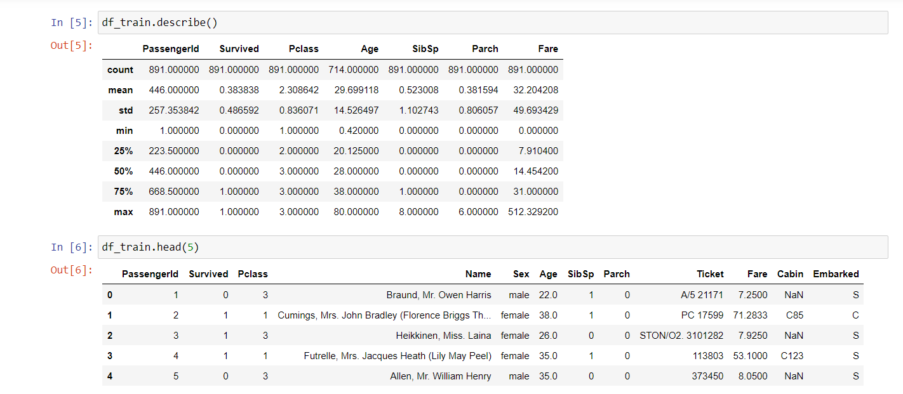
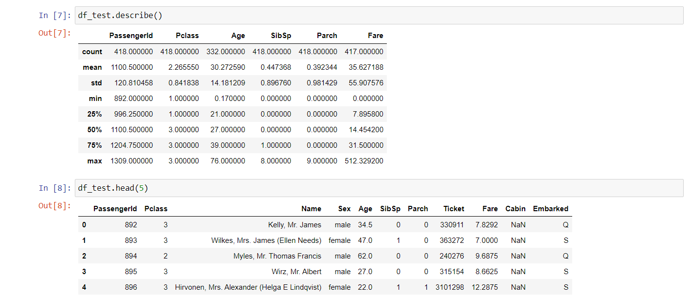
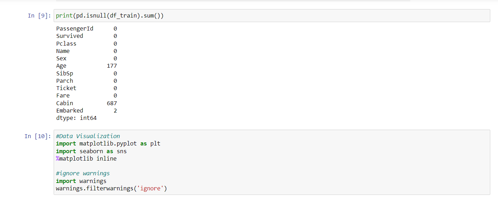
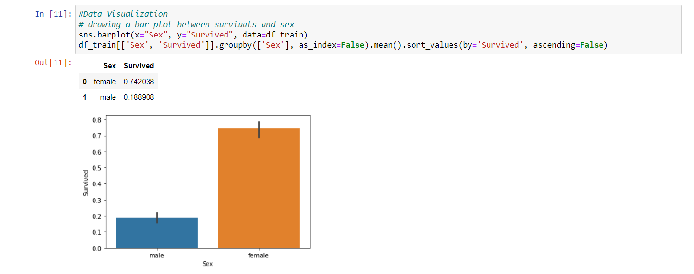
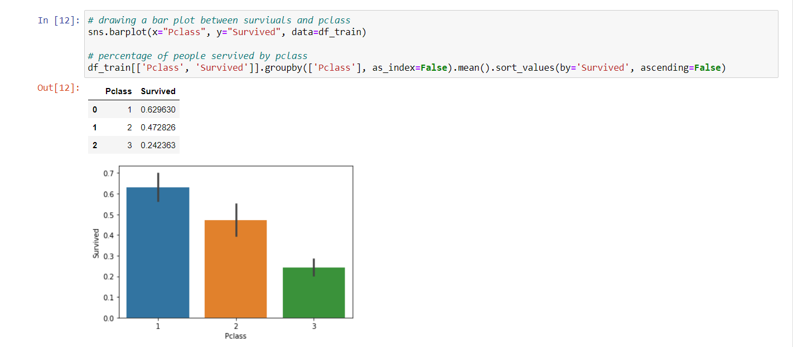
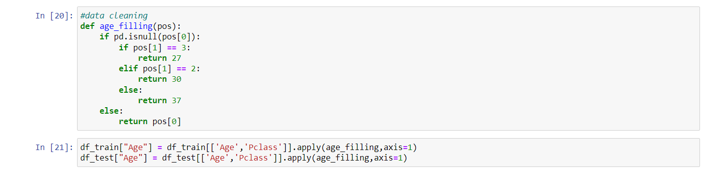
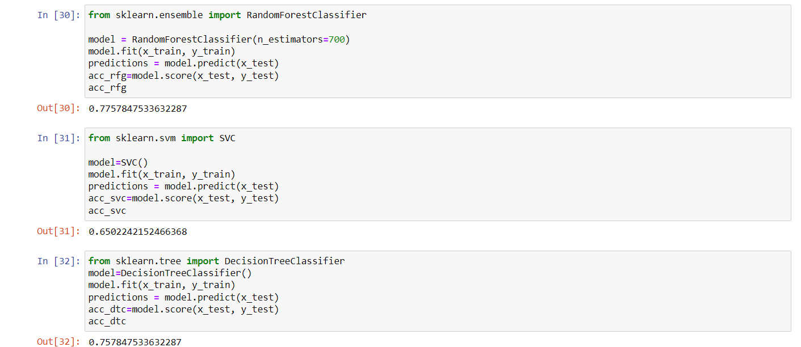
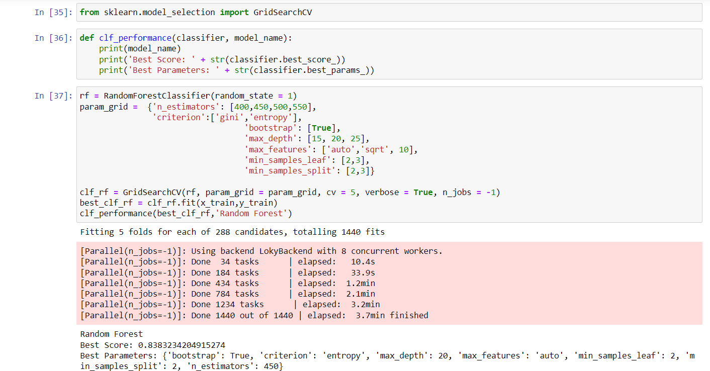
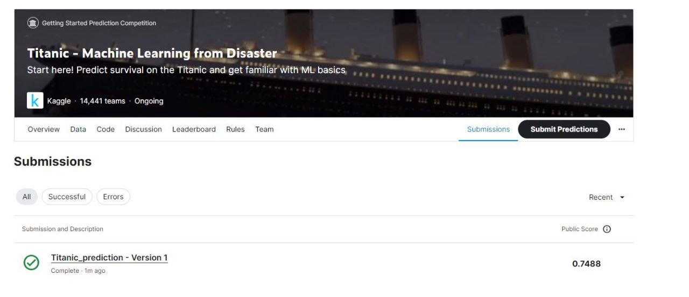

This is a Titanic ML competition using the machine learning. This competition is about the use of machine learning to create a model that predicts which passengers survived the Titanic shipwreck . Once we are ready to start competing, click on the join competition button to create an account and gain access to the competition data .
The sinking of the Titanic is one of the most infamous shipwrecks in history. So, In this challenge, they will ask us to build a predictive model that answers the question: “what sorts of people were more likely to survive?” using passenger data (ie name, age, gender, socio-economic class, etc). In this competition, we will gain access to two similar datasets that include passenger information like name, age, gender, socio-economic class, etc. One dataset is titled train.csv and the other is titled test.csv. In train.csv file will contain the details of a subset of the passengers on board (891 to be exact) and importantly, will reveal whether they survived or not, also known as the “ground truth” and in the test.csv dataset contains similar information but does not disclose the “ground truth” for each passenger. It’s your job to predict these outcomes. Where we can found it by using patterns we find in the train.csv data, predict whether the passengers on board are survived or not.
We Understands the nature of the data using info () and describe () To better understand the numeric data , we perform describe() method. It gives us understanding of central tendency of the data.
      We performed the data visualization process for the better understand of distribution of the data between the features.We perform data cleaning process to remove the noise from the data and filing the null values of the data.
 Model tuning is the experimental process of finding the optimal values of the hyper parameters for maximizing the model performance. Hyperparameters are set of variables where whose values cannot be estimated by the model from training data. These values will control the training process. Here, we performed model tuning using gridsearchcv.